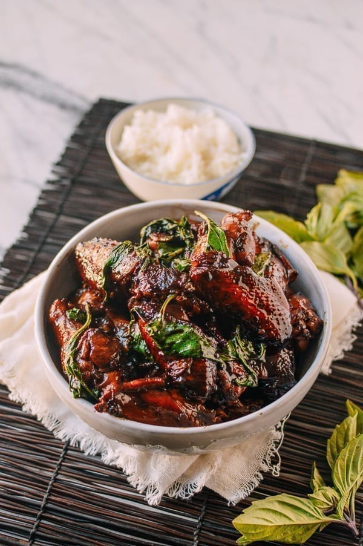

Three Cup Chicken San Bei Ji

Three Cup Chicken
Three Cup Chicken, or “San Bei Ji” (三杯鸡) is a popular standard dish in Chinese and Taiwanese cuisine. The name refers to the recipe used to make it: A cup each of the three ingredients that create the sauce: rice wine, soy sauce, and sesame oil.
INGREDIENTS
- 1 tablespoon sesame oil(15 ml)
- 2 tablespoons vegetable oil (30 ml)
- 6 slices ginger
- 5 cloves garlic (sliced)
- 1 dried chili (halved)
- 1 kg chicken wings
- 1/4 cup warm water
- 1/4 cup shaoxing wine
- 2-5 teaspoons dark soy sauce
- 1 1/2 tablespoons light soy sauce
- 2 teaspoons sugar
- small bunch of thai basil leaves or 2 scallions, cut into 2-inch lengths
INSTRUCTIONS
- Start by putting the sesame oil, vegetable oil, ginger, garlic, and red chili into your wok over medium heat. Let the aromatics infuse the oil for a couple minutes.
- Then turn up the heat to high, and add the chicken wings to the wok all in one layer. Sear the chicken until golden brown on both sides. Then add 1/4 cup warm water, ¼ cup Shaoxing wine, dark soy sauce (2-5 teaspoons, depending on how dark you’d like the dish to be), 1 1/2 tablespoons light soy sauce, and 2 teaspoons sugar.
- Stir and cover the wok. Turn the heat down to medium and simmer for 15 minutes to cook the chicken through (cook for 20 minutes if you want the chicken to be more tender).
- Then remove the cover and turn up the heat to rapidly reduce the sauce for a few minutes until it clings to the chicken and gives it a rich, dark color. Make sure to stir the chicken during this process to prevent burning.
- Throw in your Thai basil and/or scallions and fry another minute until it’s wilted. Serve!
- Cover and simmer for about 45 minutes to 1 hour until pork is fork tender. Every 5-10 minutes, stir to prevent burning and add more water if it gets too dry.
- Once the pork is fork tender, if there is still a lot of visible liquid, uncover the wok, turn up the heat, and stir continuously until the sauce has reduced to a glistening coating.